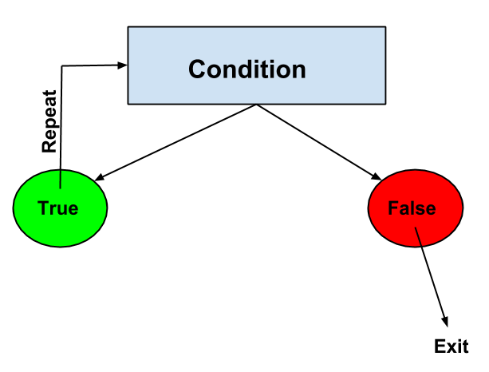

You have written a few programs -- congratulations! It's time to learn a very powerful programming concept but the console is an awkward place to write a lot of code. We need a more convenient way of writing Javascript.
JavaScript can be included inside of HTML files in two ways:
<script type="text/javascript"
src="app.js"></script><script></script> tags like so: <script> // JavaScript code in here </script>Our code so far is executed top to bottom. If that's all we could do then our programs would be limited. This is where control flow comes in. We can write code so that a statement or group of statements is only executed if a logical condition is true (or false).
A type of value that we need for conditionals is the boolean type. This type has two possible values: true or false. Boolean expressions produce boolean values. For example, when checking if two numbers are equal the value returned should be either true or false.
=== (equal) and !== (not-equal)>= <= > < (greater than and less than)Exercises: Write two expressions that return the boolean value false and two that return true.
Solution:
> 55 >= 65; false > "hello" === "bye"; false > 2 !== "2"; true > 2 > 1.5; true
Now that you're familiar with booleans, it's time to meet conditional statements. Simply put, these statements allow us to run a statement or group of statements only when a condition is true (or false).
This is what they look like:
if (condition) {
// block statement
} else {
// block statement
}
Let's break that down.
if is a keywordcondition is usually a boolean expressionblock statement will be explained belowelse is a keyword. a synonym in english would be "otherwise".block statement. Note that the else block is optional.
A block statement is used to group statements. The block is delimited by a pair of curly brackets:
{
statement_1;
statement_2;
.
.
.
statement_n;
}
Exercises: Complete the following exercises in pairs. Put your code between <script> tags inside of an HTML file.
var n = 4;
if (n > 10) {
console.log("That's a big number");
} else {
console.log("It's a small number");
}
Solution: "It's a small number" is printed.
Create a quizzing program. The program asks a question, the user is prompted to answer, the answer is checked and then a score is printed to the console.
Consider the code below; what is printed to the console? What is else if?
var n = 55;
if (n > 100) {
console.log("That's a big number");
} else if (n > 10 ) {
console.log("It's kinda big");
} else {
console.log("It's a small number");
}
Solution: "It's kinda big" is printed. else if is used to add branches to the conditional statement.
Another powerful concept in programming is "loops". With loops, a block of statements is repeatedly executed while a condition is true.

for (initialExpression; condition; incrementExpression) {
// loop statements
}
When a for loop executes, the following happens:
initialExpression is executed. This expression usually initializes one or more loop counters. This expression can also declare variables.condition expression is evaluated. If the value of condition is true, the loop statements execute. If the value of condition is false, the for loop terminates.incrementExpression executes and control returns to step 2.Let's look at an example:
Before running the code below predict what would happen.
for (var i = 0; i < 10; i = i + 1) {
console.log(i);
}
Exercises: Complete the following exercises in pairs.
Level 1. Print the numbers between 1 and 10 in reverse (i.e. starting with 10). The output should look something like this:
10
9
8
7
6
5
4
3
2
1
Solution:
for(var i = 10; i > 0; i--){
console.log(i);
}
Level 2. Print the even numbers between 1 and 20. The output should look something like this:
2
4
6
8
10
12
14
16
18
20
Hint: Look up modulo.
Solution:
for(var i = 1; i <= 20; i++){
if(i % 2 === 0){
console.log(i);
}
}
Level 3. Print the numbers from 1 to 100. But for multiples of 3 print “Fizz” instead of the number and for the multiples of five print “Buzz”. For numbers which are multiple of both 3 and 5, print “FizzBuzz”. The output should look something like this:
1
2
Fizz
4
Buzz
Fizz
7
8
Fizz
Buzz
11
Fizz
13
14
FizzBuzz
...
Hints: Look up combining boolean expressions with &&. Also look up modulo.
Solution:
for(var i = 1; i < 100; i++){
if(i%3 === 0 && i%5 === 0){
console.log("FizzBuzz");
}
else if(i%3 === 0) {
console.log("Fizz");
}
else if(i%5 === 0){
console.log("Buzz");
}
else {
console.log(i);
}
}
while (condition) {
// loop statements
}
A while loop is much simpler. The block executes repeatedly as long as the condition is true.
DANGER!! If the condition is never false then the while loop will keep going and your browser will crash. This is called an infinite loop. If you do get an infinite loop then go to "Window => Task Manager" in the browser, select the Task that is using a lot of CPU and click "End Process".
Let's look at an example:
var i = 0;
while (i < 10) {
console.log(i);
i = i + 1;
}
When i === 9 the block executes one final time, 9 is printed and i is incremented to 10. The block doesn't execute anymore because the condition is false BUT the value from the last executed expression is returned (that's why 10 has a little arrow beside it). To test this, try this code:
var i = 0;
while (i < 10) {
console.log(i);
i = i + 1;
"this value is returned!";
}
We can terminate a loop at any time by using the break statement. For example:
var number = 23;
while (true) {
number = number + 1
if (number % 9 == 0) {
break;
}
}
The above example would be an infinite loop (because true is always true!) but the break statement terminates the loop when the number is divisible by 9. The returned value (27) is greater than 23 and divisible by 9.
Don't use semicolons after the if, for, and while statements.
Exercises: Complete the for-loop exercises but this time by using a while-loop. Work in pairs.